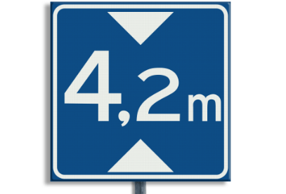

Maximale doorrijhoogte
Dit bord geeft de maximale doorrijhoogte aan.
- Is je voertuig hoger dan de aangegeven hoogte, dan mag je niet doorrijden.

Dit bord geeft de maximale doorrijhoogte aan.
Je nadert een voetgangersoversteekplaats (VOP), ook wel zebrapad genoemd.

Dit bord geeft het einde van een rijstrook aan.

Dit bord geeft aan dat je een splitsing nadert.
Dit bord geeft het aantal doorgaande rijstroken op de rijbaan aan.

De eerste afslag naar rechts is een doodlopende straat.

Dit bord waarschuwt dat er verderop in de aangegeven richting een verkeersmaatregel geldt.

Het bord is alleen van toepassing op de rijstrook of rijstroken die op het bord staan aangegeven.

Op het bord kan worden aangegeven wat de lengte van de tunnel is.
Een vluchthaven bevindt zich langs de rijbaan van een autoweg of autosnelweg. Deze mag je alleen gebruiken in noodgevallen.


Dit bord wordt gebruikt in tunnels. Het geeft de nabijgelegen uitgang aan. Op het bord staan ook de richting en de afstand vermeld.
.png)